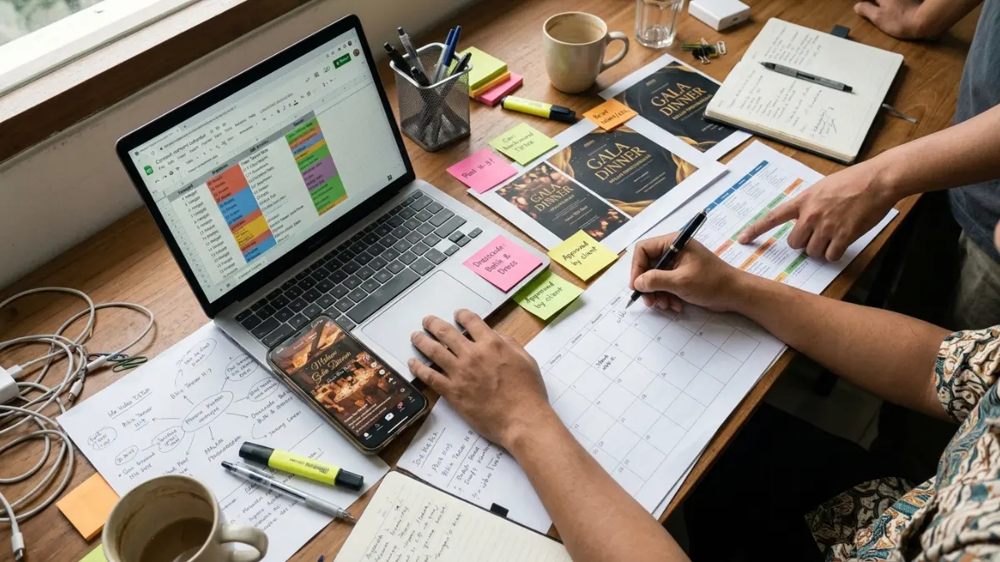

Tim panitia gala dinner menyusun strategi promosi media sosial di depan layar laptop dengan konten Instagram dan TikTok.
Tim panitia gala dinner menyusun strategi promosi media sosial di depan layar laptop dengan konten Instagram dan TikTok.
Cara promosi gala dinner di media sosial adalah menetapkan target tiket, memilih platform sesuai tamu, membuat konten bertahap, memakai iklan terarah, lalu mengukur hasilnya.
- Laporan Digital 2026: Indonesia dari We Are Social dan Meltwater mencatat 180 juta identitas pengguna media sosial di Indonesia pada Oktober 2025, naik 26 persen dari tahun sebelumnya.
- Survei APJII yang dilakukan 1 Februari sampai 15 Maret 2026 menempatkan TikTok sebagai aplikasi media sosial yang paling sering diakses, dengan porsi 31,8 persen.
- Promosi gala dinner bekerja paling baik bila dibagi menjadi empat tahap: pengumuman, edukasi, penjualan tiket, dan pengingat.
- Video pendek, iklan terarah, dan pesan langsung lewat WhatsApp saling melengkapi dalam menjual tiket.
- Keberhasilan promosi diukur dari tiket terjual dan biaya per tiket, bukan hanya dari jumlah tayangan.
- Apa Itu Promosi Gala Dinner di Media Sosial?
- Mengapa Media Sosial Efektif untuk Promosi Gala Dinner?
- Bagaimana Cara Promosi Gala Dinner di Media Sosial Langkah demi Langkah?
- Platform Media Sosial Mana yang Paling Cocok untuk Gala Dinner?
- Jenis Konten Apa yang Efektif untuk Promosi Gala Dinner?
- Kapan Waktu Terbaik Memulai Promosi Gala Dinner?
- Bagaimana Peran Iklan Berbayar dalam Promosi Gala Dinner?
- Apa Kesalahan Umum dalam Promosi Gala Dinner?
- Bagaimana Mengukur Keberhasilan Promosi Gala Dinner?
- Apa Batasan dan Risiko Promosi Gala Dinner di Media Sosial?
- FAQ
Apa Itu Promosi Gala Dinner di Media Sosial?
Promosi gala dinner di media sosial adalah kegiatan mengenalkan acara makan malam formal kepada calon tamu, sponsor, dan komunitas lewat konten digital serta iklan.
Gala dinner adalah acara makan malam formal yang biasanya diselenggarakan untuk penggalangan dana, malam penghargaan, peluncuran produk, perayaan perusahaan, atau reuni alumni. Tamu umumnya hadir dengan dress code tertentu dan membeli tiket atau meja secara terbatas.
Promosi gala dinner ditujukan bagi panitia acara, event organizer, tim pemasaran, yayasan, dan pengelola venue yang perlu menjual kursi dalam waktu terbatas. Kegiatan ini dimulai beberapa minggu sebelum acara dan berlanjut sampai laporan pascaacara.
Manfaat utamanya adalah jangkauan luas dengan biaya yang relatif terukur serta interaksi dua arah dengan calon tamu.
Batasannya, media sosial tidak menggantikan undangan resmi untuk tamu kehormatan, dan hasilnya tetap bergantung pada reputasi penyelenggara, harga tiket, serta kualitas acara.
Mengapa Media Sosial Efektif untuk Promosi Gala Dinner?
Media sosial efektif untuk promosi gala dinner karena banyak orang Indonesia menemukan merek dan acara lewat iklan, komentar, dan konten yang muncul di beranda mereka.
Laporan Digital 2026: Indonesia dari We Are Social dan Meltwater, dengan data per Oktober 2025, mencatat 180 juta identitas pengguna media sosial di Indonesia, setara 62,9 persen populasi. Angka ini naik 26 persen dibanding tahun sebelumnya.
Laporan yang sama menunjukkan 37,3 persen pengguna internet menemukan merek lewat iklan media sosial dan 32,6 persen lewat kolom komentar.
Pengguna rata-rata mengalokasikan waktu mereka di seluruh 7,7 platform dalam setiap periode bulanan. Artinya, penyelenggara gala dinner perlu hadir secara konsisten di beberapa tempat, bukan hanya satu akun.
Catatan penting: angka 180 juta adalah identitas pengguna, bukan jumlah orang unik, sehingga sebaiknya dipakai sebagai gambaran skala dan bukan target jangkauan.
Bagaimana Cara Promosi Gala Dinner di Media Sosial Langkah demi Langkah?
Promosi gala dinner dijalankan dalam enam langkah: tentukan target tiket, kenali tamu, pilih platform, susun narasi, jadwalkan konten, lalu pasang ajakan bertindak yang jelas.
Langkah 1: Apa Target Penjualan Tiket Gala Dinner?
Target penjualan tiket gala dinner harus berupa angka konkret, misalnya jumlah kursi, jumlah meja, dan batas waktu penjualan. Dari angka tersebut, panitia menghitung berapa pendaftar yang dibutuhkan dan berapa biaya promosi yang masuk akal.
Langkah 2: Siapa Calon Tamu Gala Dinner?
Calon tamu gala dinner dapat dikelompokkan menjadi alumni, klien perusahaan, donatur, komunitas profesional, dan masyarakat umum. Setiap kelompok memiliki platform dan bahasa yang berbeda, sehingga pesan promosi perlu disesuaikan.
Langkah 3: Bagaimana Menyusun Narasi Acara?
Narasi gala dinner menjelaskan alasan orang perlu hadir: tujuan acara, pengisi acara, menu, dan pengalaman malam itu. Narasi yang jelas membantu calon tamu memahami nilai tiket sebelum melihat harganya.
Langkah 4: Bagaimana Menyusun Jadwal Konten dan Ajakan Bertindak?
Jadwal konten gala dinner memuat tanggal unggah, format, platform, dan tujuan tiap konten. Setiap unggahan menutup dengan satu ajakan bertindak, seperti mengisi formulir atau menghubungi nomor WhatsApp panitia.

Kalender editorial konten promosi gala dinner dengan jadwal unggahan mingguan di media sosial.Platform Media Sosial Mana yang Paling Cocok untuk Gala Dinner?
Platform terbaik untuk gala dinner bergantung pada profil tamu: Instagram untuk citra acara, TikTok untuk jangkauan, WhatsApp untuk penutupan penjualan, LinkedIn untuk tamu korporat.
Survei APJII 2026 mencatat TikTok sebagai aplikasi media sosial yang paling sering diakses di Indonesia dengan porsi 31,8 persen, turun dari 35,2 persen pada 2025.
NapoleonCat mencatat 123.771.900 pengguna Instagram di Indonesia pada Agustus 2026, dan kelompok usia 25 sampai 34 tahun menjadi yang terbesar dengan 39,1 persen. Rentang usia ini banyak diisi pekerja muda yang relevan untuk gala dinner korporat dan alumni.
| Platform | Peran dalam promosi gala dinner | Keterbatasan |
|---|---|---|
| Membangun citra, menampilkan desain acara, Stories untuk pengingat | Jangkauan organik sangat bergantung pada format Reels | |
| TikTok | Menjangkau audiens baru lewat video pendek | Audiens luas, tetapi belum tentu sesuai profil tamu |
| Menjawab pertanyaan dan menutup pemesanan | Perlu admin yang responsif | |
| Menjangkau profesional dan perusahaan | Cocok terutama untuk acara korporat | |
| Menjangkau komunitas dan kelompok alumni | Format visual tidak seramai Instagram |
Jenis Konten Apa yang Efektif untuk Promosi Gala Dinner?
Konten yang efektif untuk gala dinner meliputi video teaser, profil pengisi acara, cuplikan menu, kisah tujuan acara, dan testimoni tamu.
HubSpot State of Marketing Report 2026 menempatkan video pendek sebagai format dengan ROI tertinggi menurut 49 persen pemasar, diikuti video panjang 29 persen dan siaran langsung 25 persen.
Bagi panitia gala dinner, video pendek vertikal berdurasi singkat dapat memperlihatkan suasana venue, dekorasi, dan persiapan tanpa produksi besar.
Konten foto tetap berguna untuk pengumuman resmi, daftar pengisi acara, dan informasi harga. Ide konten yang lebih rinci dibahas dalam panduan ide konten promosi gala dinner.
Kapan Waktu Terbaik Memulai Promosi Gala Dinner?
Promosi gala dinner umumnya dimulai delapan sampai sepuluh minggu sebelum acara, dibagi ke empat fase: pengumuman, edukasi, penjualan, dan pengingat.
Waktunya dapat bervariasi menurut skala acara. Acara dengan harga tiket tinggi atau jumlah kursi besar biasanya membutuhkan masa promosi lebih panjang karena calon tamu perlu waktu mengatur anggaran dan jadwal. Acara internal dengan daftar tamu tertutup dapat memakai jadwal lebih singkat.
Rincian tiap fase tersedia dalam artikel jadwal promosi gala dinner dari H-60 sampai setelah acara.
Bagaimana Peran Iklan Berbayar dalam Promosi Gala Dinner?
Iklan berbayar membantu promosi gala dinner dengan menjangkau calon tamu di luar pengikut akun, terutama saat tiket perlu terjual dalam batas waktu tertentu.
Laporan Digital 2026: Indonesia mencatat iklan media sosial memegang porsi terbesar dari belanja iklan digital di Indonesia dan tumbuh 11,3 persen dari tahun ke tahun.
Sekitar seperlima pengguna internet mengaku mengklik pos bersponsor dalam sebulan terakhir. Data tersebut menunjukkan bahwa iklan media sosial sudah menjadi kebiasaan konsumsi, bukan lagi hal yang asing bagi calon tamu.
Iklan paling efektif bila diarahkan ke audiens yang sudah dikenal, seperti pengunjung akun dan daftar kontak alumni. Panduan teknisnya tersedia dalam artikel iklan gala dinner di media sosial.
Apa Kesalahan Umum dalam Promosi Gala Dinner?
Kesalahan umum promosi gala dinner meliputi memulai terlambat, memakai satu format konten, tidak menyertakan harga atau cara pesan, dan mengabaikan pesan masuk calon tamu.
Kesalahan pertama adalah mengumumkan acara hanya satu kali. Calon tamu sering membutuhkan beberapa kali paparan sebelum memutuskan membeli tiket.
Kesalahan kedua adalah desain yang indah tanpa informasi penting. Tanggal, lokasi, dress code, harga, dan cara pemesanan perlu terlihat dalam satu atau dua unggahan.
Kesalahan ketiga adalah lambat menjawab pesan. Pada gala dinner dengan kursi terbatas, balasan yang terlambat dapat membuat calon tamu beralih ke acara lain.
Bagaimana Mengukur Keberhasilan Promosi Gala Dinner?
Keberhasilan promosi gala dinner diukur dari tiket terjual, biaya per tiket, jumlah pesan masuk, dan tingkat klik ke halaman pemesanan, bukan hanya dari jumlah tayangan.
Panitia dapat memberi tautan atau kode unik pada tiap platform agar sumber pembelian terlacak. Setelah acara, bandingkan target tiket dengan hasil akhir, lalu catat konten dan platform yang paling banyak menghasilkan pemesanan sebagai bahan evaluasi acara berikutnya.
Apa Batasan dan Risiko Promosi Gala Dinner di Media Sosial?
Risiko promosi gala dinner di media sosial mencakup privasi tamu, klaim berlebihan, musik berhak cipta, dan komentar negatif yang perlu ditangani cepat dan sopan.
Panitia perlu meminta izin sebelum mempublikasikan foto tamu atau tokoh. Klaim seperti acara paling eksklusif sebaiknya dihindari kecuali dapat dibuktikan.
Musik dalam video promosi perlu mengikuti ketentuan lisensi tiap platform. Seluruh data yang dikumpulkan lewat formulir pendaftaran, seperti nama dan nomor telepon, perlu dijaga dan dipakai sesuai tujuan pendaftaran.
Kesimpulan
Cara promosi gala dinner di media sosial dimulai dari target tiket yang jelas, lalu dilanjutkan dengan pemilihan platform, konten bertahap, iklan terarah, dan pengukuran hasil.
Langkah yang dapat dilakukan minggu ini: tetapkan target kursi, buat akun atau halaman pemesanan, siapkan satu video teaser, dan jadwalkan pengumuman pertama. Setelah itu, perluas dengan konten pendukung dan iklan sesuai hasil yang terlihat.
FAQ